Work
Projects.
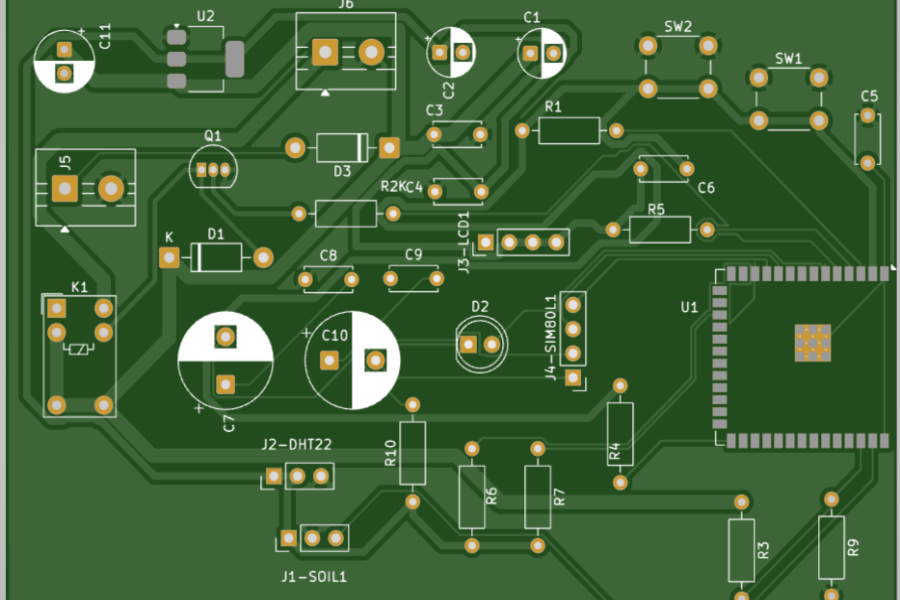
IoT Hardware · 2019 – Present
Rootry: Smart Irrigation for Smallholder Farms
Smallholder farms in Delhi-NCR often have no grid power and irregular labor for manual watering, so crops get overwatered, underwatered, or skipped entirely depending on who's around that day. The hard part wasn't the sensor logic, it was making something a farmer with no smartphone could trust without checking it. I designed hysteresis band moisture control, 30 to 50%, with adaptive compensation above 35°C, and dual GSM and WiFi so alerts reach any feature phone. Four iterations and six years later it's field-tested on a real 4-acre site, with a measured 30% water reduction (250 L/m² vs 360 L/m² on the control plot). If you want to see hardware that had to survive actual field conditions rather than a demo table, this is it.
🌍 Runner-up Worldwide · UPenn EcoVenture 2024
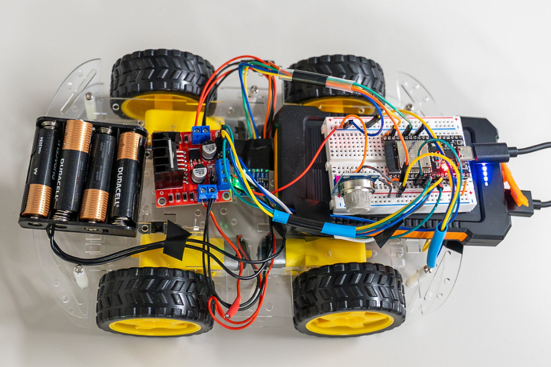
Robotics · ECE Innovate 2026 · Georgia Tech
A.R.I.S.: Autonomous Rescue and Inspection System
Disaster sites are exactly where you don't want to send a person first, but most rovers need a human driving them, which defeats the purpose. The challenge was making the rover decide on its own, without lag, without a human in the loop, while still reporting back something useful. I built a non-blocking FSM cycling through EXPLORING, TURNING, and HAZARD DETECTED states, with closed-loop proportional heading correction from an MPU6050 IMU, ultrasonic clearance sensing, and an MQ-6 gas sensor for hazard detection. Telemetry streams to an operator dashboard 4 times a second over WebSocket. It won Best in Thread, judged entirely online from a submitted user guide, demo video, and thread reflection, no live demo, no room full of judges, just the work speaking for itself. If you're evaluating autonomous systems experience, this is the project where the robot actually had to think without me.
🏆 Best in Thread · $1,000 · ECE Innovate 2026
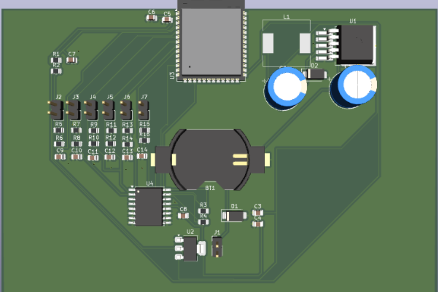
PCB Design · Industrial IoT
PressLog: Industrial IoT OEE Downtime Logger
A hardware internship asked me to solve a real factory-floor problem as the second interview round: workers need a fast, reliable way to log machine downtime causes without slowing down the line. Manufacturing floors are brutal on electronics, motor noise, dust, vibration, and workers who just want to press a button and move on without thinking about it. I designed a 2-layer KiCad PCB with six illuminated tactile buttons, each one a downtime category, confirmed by LED, an 85dB buzzer, and vibration feedback. RC debounce filtering protects every input from VFD electrical noise, the I2C bus is routed clear of the buck converter's switching node, and the whole thing logs to flash before ever attempting a network call, so no event is lost if the connection drops. The board is DRC and ERC clean with Gerbers ready to fabricate. The company liked the approach enough to mention it directly, even as they narrowed their cohort. If you want proof I can design for conditions that actually break naive circuits, this is the card to read closely.
Design complete · PCB not yet physically built
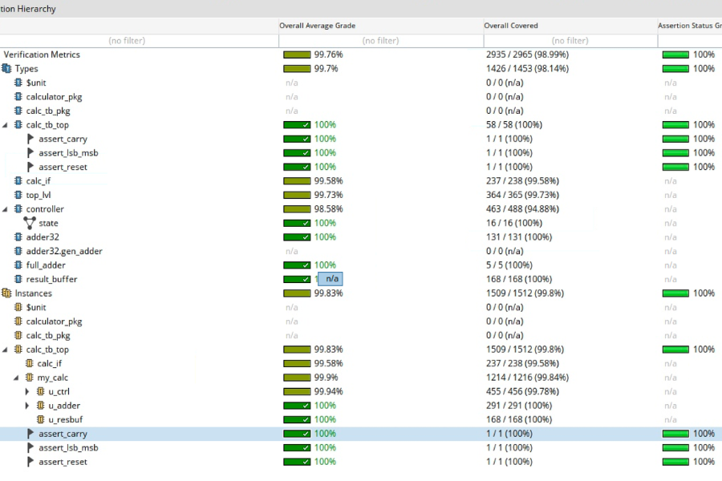
Digital Design · VLSI · Full Flow
RTL-to-GDSII 64-bit Calculator
Before Silicon Jackets onboarding I didn't know what Digital Design or Design Verification actually meant in practice, the concepts existed only in lecture slides. The real difficulty wasn't any single stage, it was carrying one design through every stage without handing it off to someone else, which most students never do solo. I built a memory-mapped 64-bit calculator end to end: RTL in SystemVerilog with an FSM controller and SRAM interface, a constrained-random testbench in Cadence Xcelium reaching 99.2% code coverage confirmed in Verdi, then synthesis in Genus, place-and-route with CTS in Innovus, and timing closure in Tempus. I never joined the org afterward, by choice, but I'd already completed the full flow independently by the time I decided that. If you're trying to gauge whether I understand silicon beyond writing RTL, this is the project that proves the rest of the flow too.
New repo with original work in progress · link will be updated
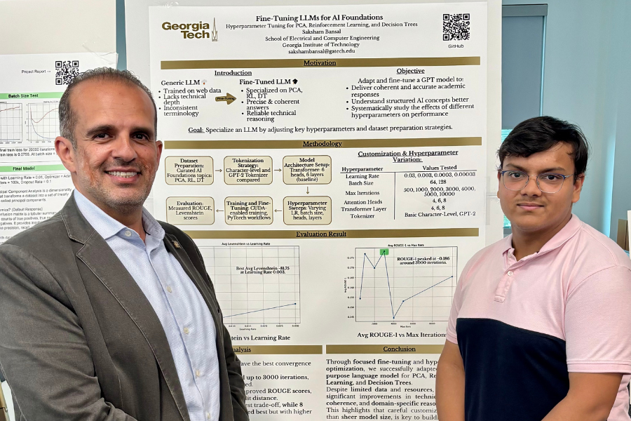
ML · Course Project · ECE2806 · Georgia Tech
GPT Domain Fine-Tune
A generic language model doesn't know your specific course material, it'll hallucinate or generalize instead of answering precisely within a narrow academic domain. The course gave us starter code, but tuning it well meant understanding why each hyperparameter mattered, not just changing numbers until results improved. I fine-tuned a GPT-style causal transformer on a hand-curated corpus covering PCA, Reinforcement Learning, and Decision Trees, running systematic sweeps across learning rate, batch size, attention heads, transformer layers, and tokenizer strategy. The best configuration, lr 0.003, 128 batch size, 8 heads, GPT-2 tokenizer, hit a ROUGE-1 score of 0.186 and Levenshtein distance of 81.75 across 16 standardized prompt-answer pairs. This is a side skill, not a focus, but it shows I can work methodically even outside hardware.
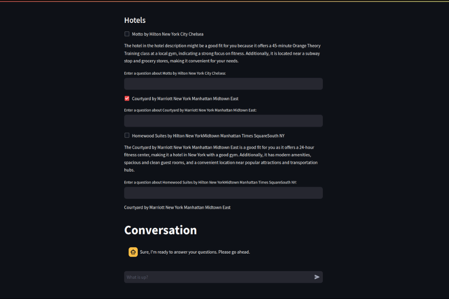
Software · Hackathon · Team: Aamod Varma, Saksham Bansal, Ze Yu Jiang
TraverGo: AI-Powered Hotel Discovery
Reading hundreds of hotel reviews to find the right match is slow, so we built a conversational search layer instead. Natural language queries match against hotel descriptions through a Qdrant vector database, sentiment analysis across reviews generates summary ratings, and a LangChain plus OpenAI chatbot answers follow-up questions using live location data from the Traversaal Ares API. A decoder model explains why each hotel was recommended, so the answer isn't a black box.
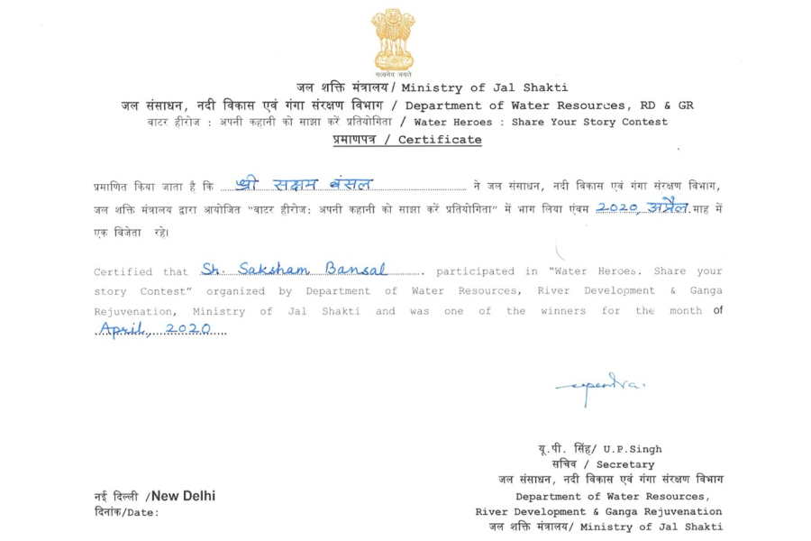
Mechatronics · Water Conservation
Dripmise: Automatic Timer Tap
An automatic faucet with a built-in soaping interval. Cuts water during the 20-second soap cycle, resumes for a timed rinse. Installed at Timber Taste, a furniture factory in India, and measured 96,000 litres saved per month. Received an INR 10,000 award from the Government of India for contribution to water conservation, and was appointed Water Ambassador for Gurugram.
🏅 ₹10,000 · Government of India · Water Conservation
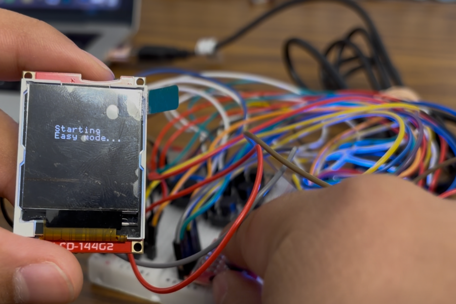
Embedded · ARM Mbed
Mbed Wordle (2035le)
A phone can run Wordle without thinking about memory. A microcontroller can't. I built the game on ARM Mbed using a doubly linked list for heap management, custom pixel-rendering on an LCD, and a real-time FSM driving nav-switch input, the kind of constraint that makes a five-minute game take a lot longer to build right.
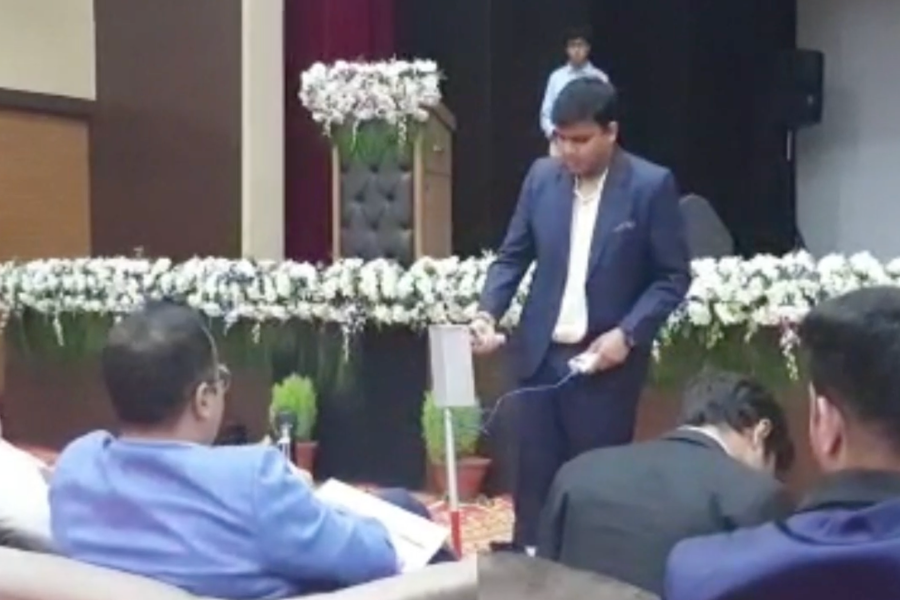
Assistive Tech · Embedded C
Opticker: Smart Cane for the Visually Impaired
Most assistive tech for visually impaired navigation is too expensive to be widely usable. I designed Opticker to solve drop and stair detection with an IR sensor and forward obstacle avoidance with ultrasonic, using dual-buzzer feedback so the user can tell hazard types apart by sound alone, all built to stay manufacturable at low cost.
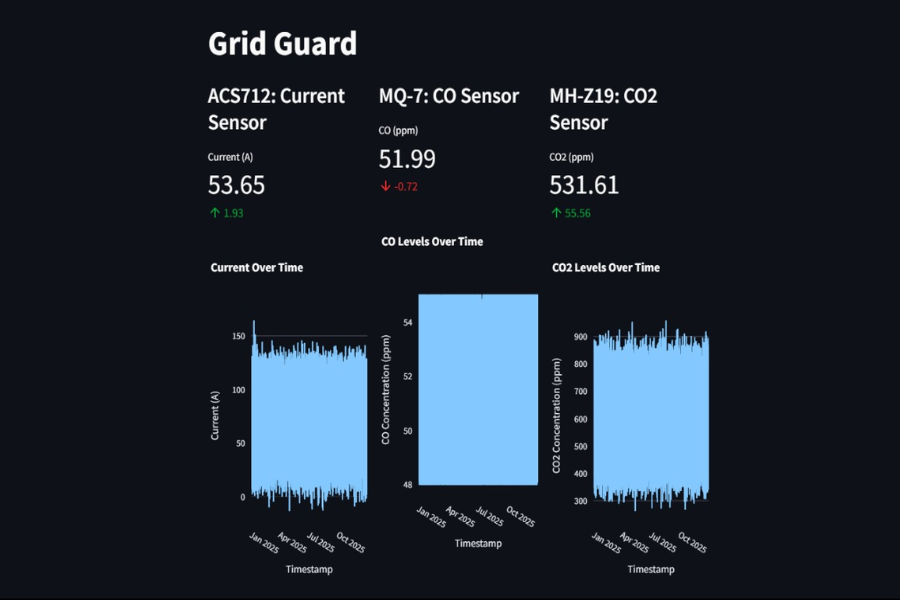
ML + Embedded
Grid Guard
Buildings waste energy because HVAC systems react instead of predicting. I integrated current and gas sensors into a real-time emissions dashboard, then trained SVR models to forecast consumption trends and automate HVAC and ventilation decisions ahead of demand instead of after it.
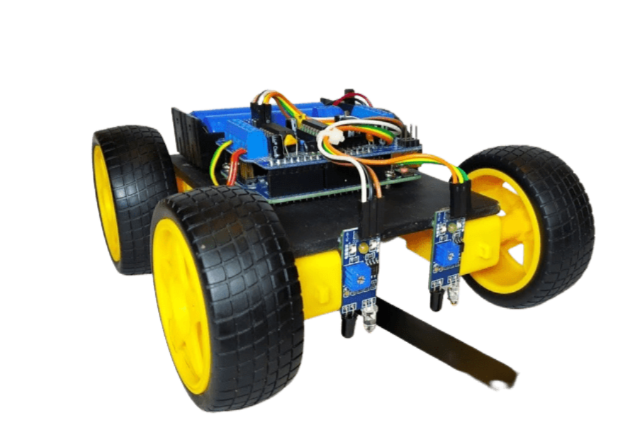
Robotics · Control
Line Follower Robot
A basic line follower jerks and overcorrects. Mine uses an IR sensor array with an Adafruit Motor Shield, and I tuned the motor control logic specifically to smooth out alignment and speed correction so the robot tracks the line without the usual stutter.
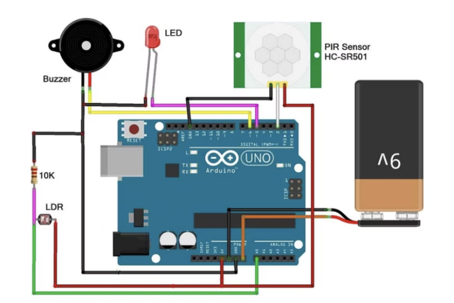
Embedded · Security
Home Security System
A motion sensor alone triggers false alarms constantly, daylight, pets, shadows. I combined PIR motion detection with LDR light sensing so the alarm only fires in low-light, high-motion conditions, cutting false positives without losing real coverage.
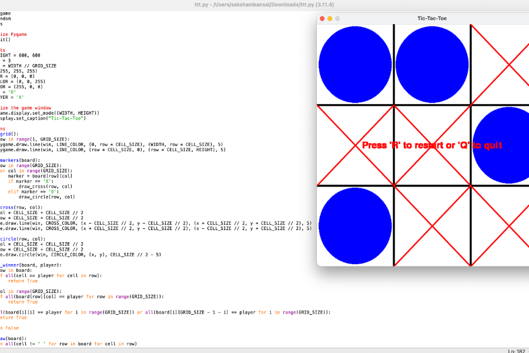
Python · Algorithms
Tic-Tac-Toe (Minimax AI)
Built an unbeatable Tic-Tac-Toe opponent using Minimax search, with the decision tree running in real time inside a Pygame interface, simple game, but a clean implementation of adversarial search.
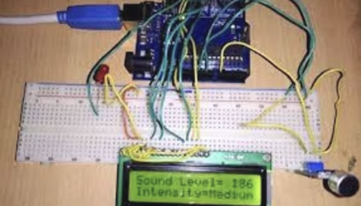
Analog · Signal Processing
Noise Indicator
An analog microphone feeds an Arduino for real-time ambient decibel monitoring, with LED brightness scaling directly to measured sound level, a small project, but useful for understanding analog signal processing fundamentals.
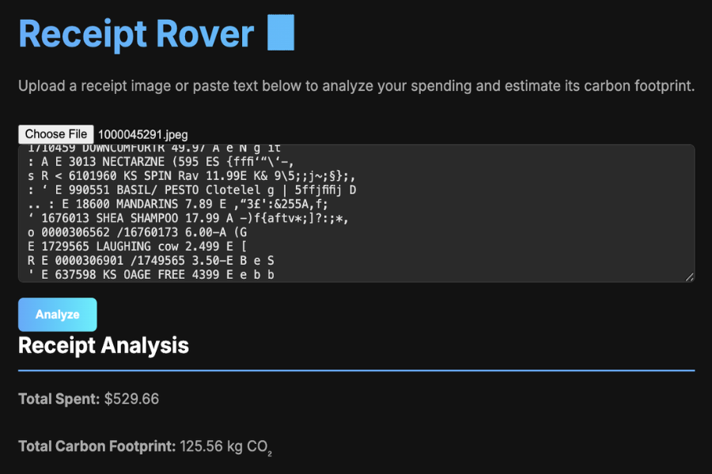
Python · Automation
Receipt Rover
Manually tracking spending and its environmental cost is tedious enough that nobody does it. Receipt Rover extracts data from a photo or text input, visualizes spending patterns automatically, and calculates the carbon footprint behind each purchase.